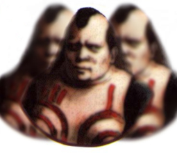
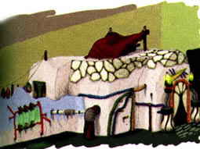

Juba's Corner: Information about the Liberal District
 |
{Juba:} The Town of Zoah is split up into two districts. The first district, The Liberal District, is where the people who have not yet earned the favor of the Gods reside. There are many different kinds of people here including: store owners, gatekeepers, Hunters, bar owners (myself of course), and outsiders. Outsiders aren't tolerated too well in this town, and wouldn't ever dream of going to the Holy District. Although, an outsider can earn the respect of the people, if he works hard enough, like me. I'm was originally from a village in a place called Uru. I managed to open up my own bar, worked hard, and well, look at me now! We have to work ourselves to the bone, to earn our keep. If we work hard enough and show complete faith in the Gods, we may be excepted into the Holy District, a place of holy men. That is, if the Council approves. |
 People who live in the Liberal District, have to work hard to earn their keep. One day they may be accepted into the Holy District, maybe. |